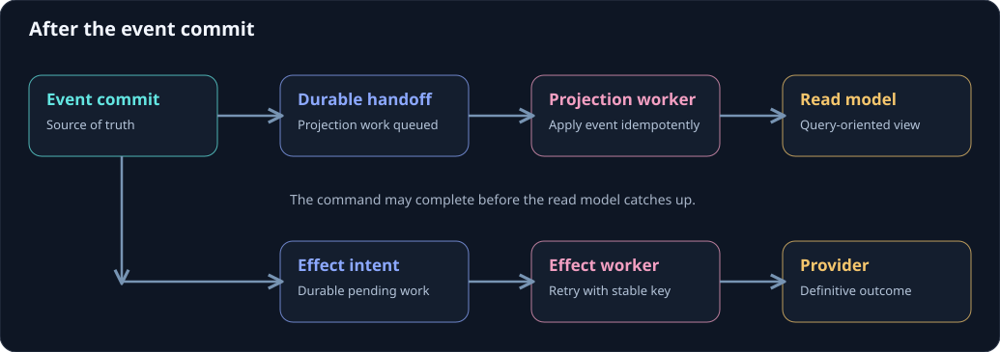

Projections and read models
A projection transforms events into a useful view. A read model is the result a query uses. In a workshop application, a registration actor owns its lifecycle, a projection writes a registration card to SQL, and an authorized reader returns that card to the attendee.
On this page
This lets the command side focus on decisions while the query side has fields and indexes suited to the page.

Three roles in one application
| Role | Responsibility | Example |
|---|---|---|
| Event-sourced actor | Validate a command and record domain events. | Registration lifecycle. |
| Projection | Translate delivered source events into another data shape. | SQL registration card writer. |
| Read model and reader | Answer the page's question under current access rules. | One attendee's registration card. |
An actor query reads that actor's current reconstructed state. A cross-actor list should usually read an application query model rather than activating every actor in the list. CQRS in practice explains that choice.
A typed projection listener
The example subscribes to registration events and delegates the database work to an application writer.
[ProjectionStreamSubscription(typeof(RegistrationActor))]
public sealed class RegistrationCardsProjection(IRegistrationCardWriter writer) : ProjectionActor
{
public Task On(EventEnvelope<RegistrationRequested> envelope)
{
RegistrationCard card = RegistrationCards.From(envelope.Event);
return writer.ApplyAsync(card, RegistrationCards.Source(envelope, card), CancellationToken.None);
}
public Task On(EventEnvelope<RegistrationCancelled> envelope)
{
RegistrationCard card = RegistrationCards.From(envelope.Event);
return writer.ApplyAsync(card, RegistrationCards.Source(envelope, card), CancellationToken.None);
}
}
The writer recognizes consumer/stream/version identities and commits its receipt with the view changes. It handles duplicates, source conflicts, and ordering according to the events it consumes. An attribute does not create a database schema or durable recovery policy.
A compatible event-store route can persist projection handoffs with events. The host operates the consumers and recovery workers. If a projection fails after a known event commit, repair its pending read-side work rather than appending the business command again.
A small immutable read model
The same event facts can be folded into an immutable model. RegistrationDetails implements its view calculation with On methods returning another record.
public sealed record RegistrationDetails(Guid Id) : TroolioReadModel
{
public Guid OwnerId { get; init; }
public Guid WorkshopId { get; init; }
public string DisplayName { get; init; } = "";
public string Status { get; init; } = "absent";
public RegistrationDetails On(EventEnvelope<RegistrationRequested> envelope) =>
this with { OwnerId = envelope.Event.AttendeeId, WorkshopId = envelope.Event.WorkshopId,
DisplayName = envelope.Event.DisplayName, Status = "requested" };
public RegistrationDetails On(EventEnvelope<RegistrationCancelled> _) =>
this with { Status = "cancelled" };
public override Func<Metadata, bool> Authorized =>
headers => OwnerId != Guid.Empty && headers.UserId == OwnerId;
}
TroolioReadModel is one query-side building block. ReadModelProjectionActor<T> can record links to selected source events, and ReadModelResolver<T> folds the model's stream using a GUID constructor and event handlers. The store must resolve links correctly.
This exact-model read is different from an indexed SQL catalogue. A growing linked history can make repeated reads expensive. Use a durable semantic projection for frequently queried cross-actor lists, schedules, reports, and notification feeds.
Authorization and freshness
The model's Authorized property expresses an access rule; the application must enforce it using the current authenticated caller. The base implementation defaults true, and the generic resolver alone is not an access-control boundary.
A successful command can precede the projection update. Define whether a query returns a current result, a known stale result, or a not-ready status. A UI can show accepted command progress and refresh after a committed-data hint. Source positions are meaningful within their source contract; there is no automatic total order across all actors.
Continue with projection design, read-model design, idempotency and ordering, and realtime updates. The workshop walkthrough connects the roles with downloadable C# source.